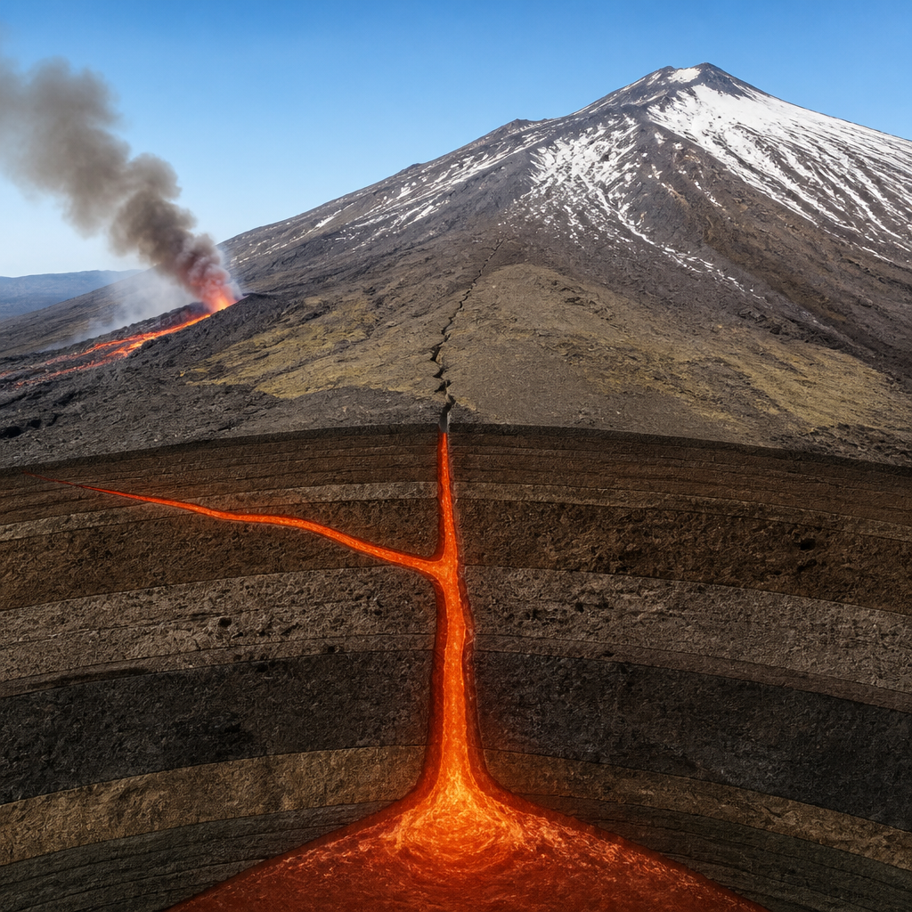

Etna, l’intrusione del 2008 che ha mostrato l’arresto di un dicco magmatico
Fratture al suolo, terremoti e deformazioni hanno permesso di seguire una propagazione sotterranea sul fianco settentrionale del vulcano.
Il 13 maggio 2008 l’Etna ha offerto un’occasione rara per osservare, quasi passo dopo passo, un processo che normalmente resta nascosto sotto il vulcano. Sul fianco settentrionale si propagò un dicco magmatico, cioè una frattura nella roccia riempita di magma, spinto dal centro del vulcano verso Nord. Il magma non arrivò in superficie in quel settore e non produsse quindi un’eruzione sul fianco Nord. Nello stesso tempo, però, la frattura si propagò anche verso Sud, alimentando un’eruzione laterale nella Valle del Bove.
L’intrusione lasciò in superficie una traccia ben riconoscibile: un campo di fratture secche, vale a dire spaccature del terreno dalle quali non è emerso magma. L’insieme di queste evidenze, unito ai dati registrati dalle reti di monitoraggio, ha consentito di ricostruire il percorso del dicco e di distinguere la sua fase di avanzamento da quella di arresto. Proprio questa coerenza tra ciò che si vedeva al suolo e ciò che avveniva in profondità rende l’episodio un caso di studio importante per comprendere le eruzioni laterali dell’Etna.
Le fratture hanno registrato il passaggio del magma
La situazione fu inizialmente delicata. Posizione e direzione del dicco sul versante settentrionale richiamavano lo scenario del marzo 1981, quando una fessura eruttiva si propagò verso Randazzo e la lava causò danni al territorio, seppellendo e interrompendo la ferrovia Circumetnea e la principale strada statale della zona.
Nel 2008, mentre le fratture si aprivano fra piroclastiti, lave e chiazze di neve ancora presenti a fine primavera a nord del Cratere di Nord-Est, gli strumenti registravano terremoti che migravano nella stessa direzione del dicco. Le fratture erano orientate soprattutto Nord-Sud e Nord-Nordovest-Sud-Sudest e formavano una fascia larga diverse centinaia di metri.
La loro disposizione, apertura e geometria indicavano che il magma era risalito e si era incuneato negli strati più superficiali del vulcano, senza però sfociare all’esterno. Le stime collocano il dicco a una profondità compresa fra 200 e 600 metri. Questa valutazione deriva dalla relazione fra profondità del dicco e distanza tra le zone in cui la fratturazione superficiale è maggiore: in questo caso, il terreno ha in pratica registrato la posizione dell’intrusione. Le profondità ricavate dalle fratture coincidono inoltre con quelle indicate dalla sismicità e dalla modellazione geodetica, cioè dallo studio delle deformazioni del suolo.

I terremoti indicano il passaggio dall’avanzamento all’arresto
La sismicità ha permesso di seguire l’evoluzione dell’intrusione nel tempo e nello spazio. Gli ipocentri, i punti in profondità dove hanno origine i terremoti, avanzavano verso Nord insieme alla propagazione del dicco. Ma il segnale decisivo è arrivato dai meccanismi focali, che descrivono il tipo di movimento avvenuto lungo la rottura responsabile di un sisma.
All’inizio prevalevano meccanismi normali e trascorrenti, compatibili con un regime estensionale: il terreno si apriva, la frattura magmatica avanzava e il magma entrava al suo interno. In seguito comparvero componenti inverse, associate a una fase compressiva. Questo cambiamento indica che la pressione del magma non era più sufficiente a superare la tensione locale: il dicco incontrava resistenza, rallentava e si bloccava. Dopo l’arresto, il magma iniziava a solidificare nella frattura.
Un bilancio tra l’energia del dicco e quella dei terremoti
L’interpretazione è stata confermata dal bilancio energetico, il confronto tra l’energia disponibile per far propagare il dicco e quella rilasciata dai terremoti durante il processo. Le deformazioni rilevate dalle reti di monitoraggio permettono di stimare le dimensioni del dicco già nella fase iniziale e, da queste, il suo budget energetico. Se l’energia disponibile si esaurisce, l’intrusione non può proseguire.
Nel caso del 13 maggio 2008, l’energia sismica rilasciata durante la propagazione, espressa come momento sismico cumulato, coincide quasi perfettamente con l’energia elastica attesa per il dicco modellato. Il momento sismico è una misura della dimensione fisica della rottura che ha prodotto un terremoto. La convergenza fra fratture al suolo, sismicità, meccanismi focali e bilancio energetico porta quindi a una conclusione univoca: il dicco si fermò naturalmente perché il sistema aveva esaurito la propria capacità di avanzamento.
L’episodio del 2008 mostra l’utilità di integrare in tempo reale osservazioni di campo, deformazioni del suolo, terremoti e bilancio energetico. Nelle fasi iniziali, un dicco laterale può trasformarsi rapidamente in un’eruzione effusiva a bassa quota, potenzialmente pericolosa per le aree abitate. Riconoscere il passaggio dall’estensione alla compressione e verificare l’esaurimento dell’energia disponibile aiuta a capire se un’intrusione sta ancora avanzando oppure si sta arrestando.
Per il rischio vulcanico, il valore dell’evento non sta soltanto nella ricostruzione di ciò che avvenne allora. Il caso dimostra che l’osservazione simultanea della superficie dell’apparato vulcanico e dei dati geofisici acquisiti in tempo reale può offrire un quadro più completo della dinamica di un’intrusione magmatica. Sull’Etna, dove le eruzioni laterali sono quelle più pericolose per le popolazioni etnee, distinguere con maggiore affidabilità la propagazione dall’arresto di un dicco è uno strumento essenziale per valutare gli scenari possibili.
Questo articolo l'hai letto sul blog di Meteo Radar: un'app che ti mostra da dove vengono i numeri, invece di limitarsi a dartelo. E ogni mattina ne trovi uno nuovo come questo.